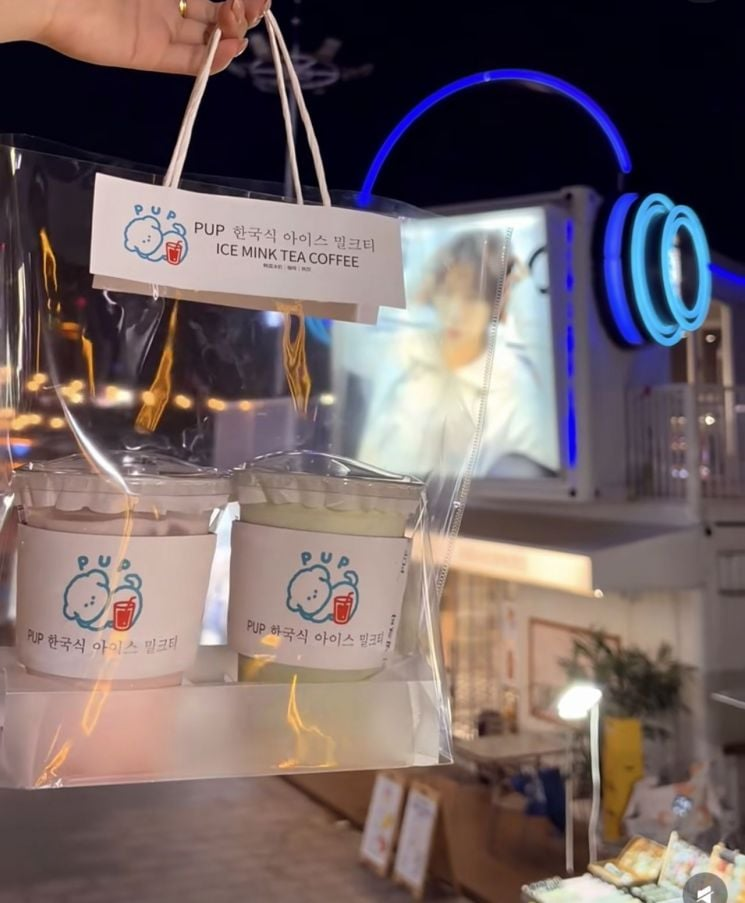
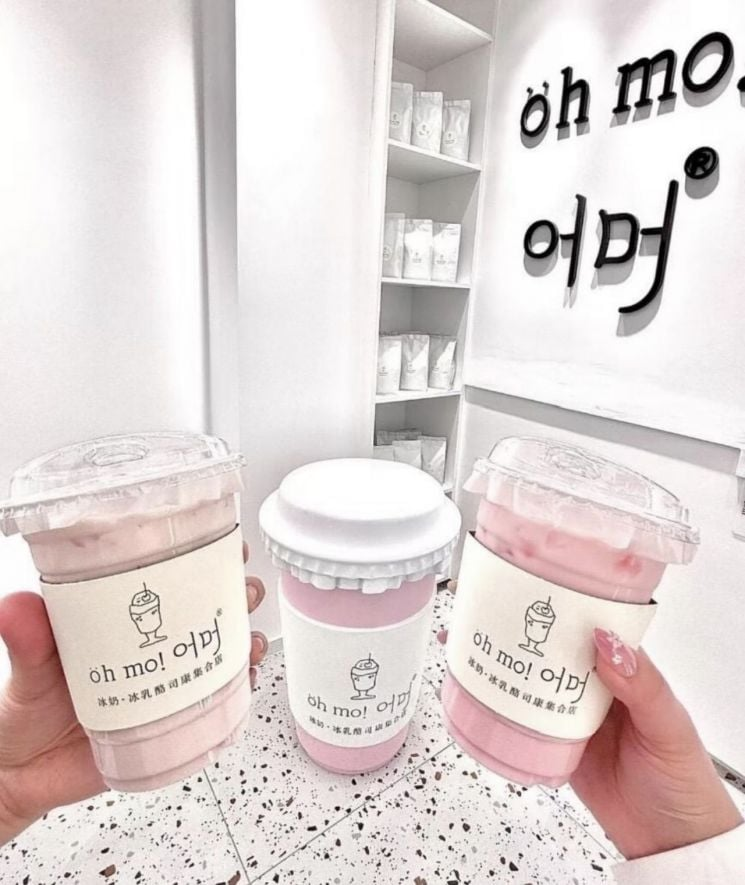

매체는 "이름만 들으면 한국 서울의 작은 카페에서 직원이 미소 지으며 판매할 것 같지만 정작 한국과 직접적인 관련이 없는 음료"라면서 "중국 동북부에서 시작됐다"라고 소개했다.


매체는 "이름만 들으면 한국 서울의 작은 카페에서 직원이 미소 지으며 판매할 것 같지만 정작 한국과 직접적인 관련이 없는 음료"라면서 "중국 동북부에서 시작됐다"라고 소개했다.
우리도 영어 들어간 상품이 프리미엄 붙듯이 중국엔 한국어로 된 상품에 들어갔나보네 문화힘이 참 대단해
한국식 밀크티의 원조는 데자와다
쟤네가 잘못한건 맞는데
한국풍이라는게 어떤식으로 다른지 최근에 본게 있음
그냥 아무 장식 안한 하얀 우유케이크에 포인트 장식 좀 있고 이런거를
한국에서 가장 흔한 케이크 디자인중 하나인데
중국에서 이 디자인으로 팔면 한국식/한국풍 케이크로 팔린다더라
중국식 케이크는 누가봐도 축하!!!!!느낌나게 장식이 도드라진다더라고
그래서 한국에서 많이 보이는 디자인을 한걸로 한국식 중국음료로 판듯ㅋㅋㅋ
짱1깨들 외국에서 한국팔이로 사기 많이 침
짱1깨 제품에 한국어 써놓고 한국이 가진 소프트파워 갉아먹는거임
국제 공조해서 싹다 잡아 넣어야하는데 시발
어머련아
편의점에 팔던 덴마크 우유같은건가
런던베이글뮤지엄 같은거지뭐
저 정도는 뭐....
우리도 ~식 요리 이런건 걍 많이 하니까, 걍 우리나라 인기/인지도가 많이 높아졌다는 느낌.
문제는 일부 제품이나 브랜드를 '한국에서 만든, 한국 브랜드' 라고 광고하니깐 씨발 빡치는 거야
이게 한국을따라했다고 하는건 ㄱㅊ은데 한국브랜드라그러면 열받지 ..후자가아니길
쓰는건 상관이 없어 대신 저걸 가지고 뭐 한글은 원래 중국거였다 한국 니들은 이런거 만들지마라 이러면 문제인거지
저러면 본인 자존감은 개박살 날거같은데ㄷ
저게 왜 문제임
'한국' 이름 달고 장난만 치지마라